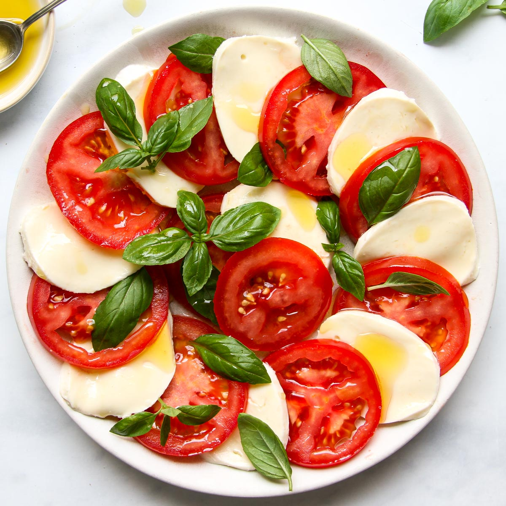

Caprese Salad

A Classic Caprese Salad
This simple but delicious salad will leave you wanting seconds. With the only necessary ingredients of
cheese oilive oil and basil it can be made and most
certainly enjoyed in a snap.
Ingredients
- Fresh Mozzarella 20 slices
- Tomatoes 20 slices
- Fresh basil leaves, chiffonade 20g
- Salt and pepper to taste
- Extra virgin olive oil 20ml
Directions
- Arrange the mozzarella and tomato slices in overlapping circles on a serving platter. Alternating slices of cheese and tomato.
- Sprinkle the basil, salt and pepper over the salad. Drizzle with the oil. Serve 2 slices of cheese and two slices of tomato on each
individual serving plate.